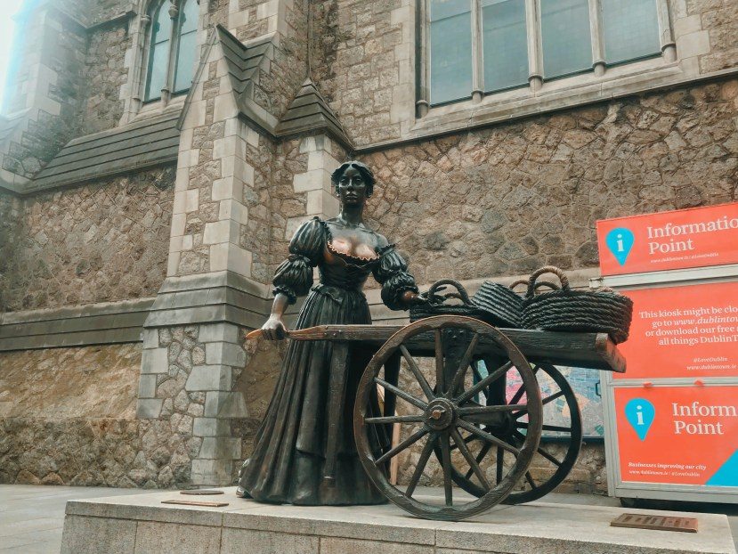
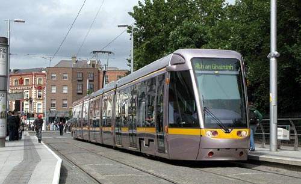
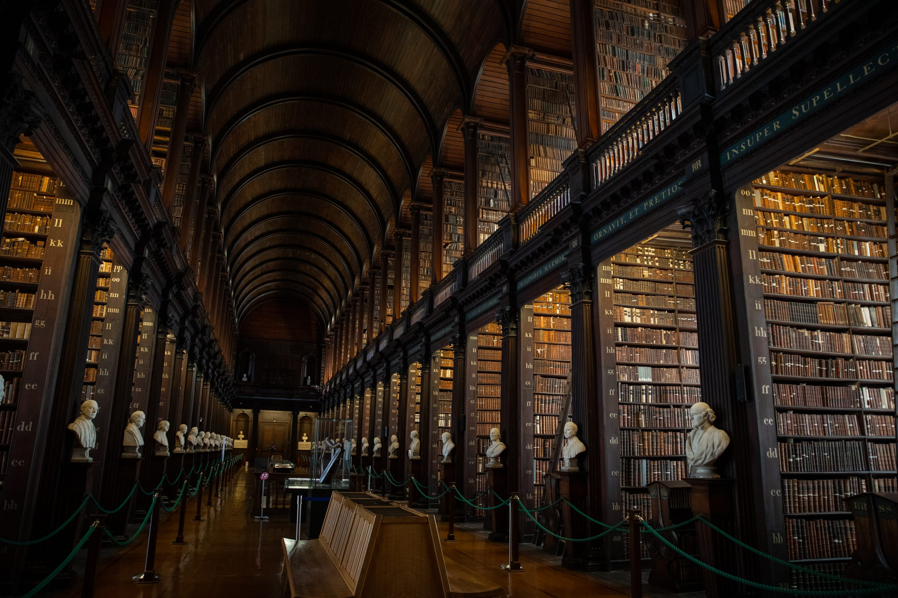
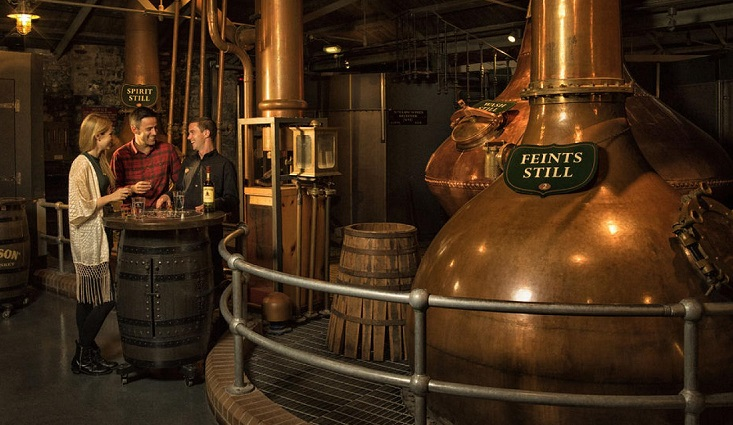
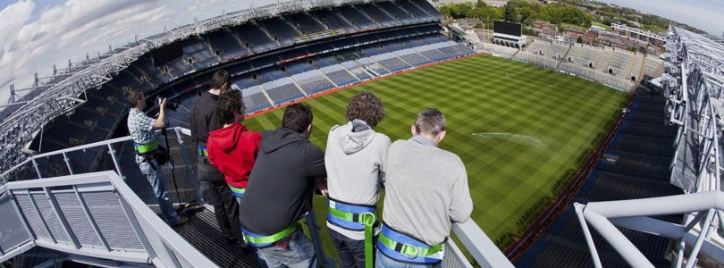

GEOGRAPHY
Dublin, capital of the Republic of Ireland, is on Ireland’s east coast at the mouth of the River Liffey.
Its historic buildings include Dublin Castle, dating to the 13th century, and imposing St Patrick’s Cathedral, founded in 1191.
City parks include landscaped St Stephen’s Green and huge Phoenix Park, containing Dublin Zoo.
The National Museum of Ireland explores Irish heritage and culture.
LANDSCAPE

Satellite image showing the River Liffey entering the Irish Sea as it divides Dublin into the Northside and the Southside
Dublin is situated at the mouth of the River Liffey and encompasses a land area of approximately 117.8 square kilometres
(45.5 sq mi) in east-central Ireland.It is bordered by the Dublin Mountains,
a low mountain range and sub range of the Wicklow Mountains, to the south and surrounded by flat farmland to the north and west.
LANDMARKS

Dublin has many landmarks and monuments dating back hundreds of years.
One of the oldest is Dublin Castle, which was founded as a major defensive work on the orders of England's King John in 1204.
The Spire of Dublin is a 121.2-metre conical spire made of stainless steel. The Book of Kells is an illustrated manuscript created by Irish monks circa 800 AD.
The Ha'penny Bridge, an iron footbridge over the River Liffey, is one of the most photographed sights in Dublin.
TRANSPORT

Dublin has many landmarks and monuments dating back hundreds of years.
One of the oldest is Dublin Castle, which was founded as a major defensive work on the orders of England's King John in 1204.
The Spire of Dublin is a 121.2-metre conical spire made of stainless steel. The Book of Kells is an illustrated manuscript created by Irish monks circa 800 AD.
The Ha'penny Bridge, an iron footbridge over the River Liffey, is one of the most photographed sights in Dublin.
ECONOMY

Dublin was at the forefront of Ireland's economic expansion during the Celtic Tiger period.
In 2009, Dublin was listed as the fourth richest city in the world by purchasing power and 10th richest by personal income.
As of 2017, approximately 874,400 people were employed in the Greater Dublin Area. Financial services have become important to the city since the establishment of Dublin's International Financial Services Centre in 1987. The city is host to half of the world's top 50 banks and to half the top 20 insurance companies.
NATIONAL PRINT MUSEUM

Plan a trip to the National Print Museum and discover its stunning collection of art from recognisable names such as Maser, Annie Atkins and Damn Fine Print. See the permanent collection, which includes an original 1916 Proclamation and explore the layout of an old printing workshop.
Stop by the on-site shop to pick up a print and enjoy a Cloud Picker coffee (hand-roasted in the capital) in PRESS café. If you’re visiting at the weekend, time your visit to try the delicious brunch menu.
DISTILLERY BOW STREET

Crowned the World’s Leading Distillery three years in a row, Jameson Distillery was opened in 1780 by owner John Jameson. Enjoy a tour of the distillery and learn how the famous tipple is made, or book a Whiskey Shakers Masterclass and make some delicious Jameson-based cocktails; you can taste test your creations in the impressive JJ’s Bar.
Get a group of friends together and book this unmissable experience.
Croke Park Stadium Tour, Skyline & GAA

Take your day to new heights with a skyline tour at Croke Park Stadium. Gaze at the jaw-dropping panoramic views of Dublin as you move along the open-air walkway on the stadium’s rooftop.
Experienced tour guides point out buildings and landmarks as you view the city from above.
Entry to the GAA museum is included in the price of your Skyline Tour, and sports fans can’t miss a visit an opportunity to see the Sam Maguire and Liam MacCarthy trophies. Test your hurling and Gaelic football skills in the Interactive Games Zone and make time for the Remembering Bloody Sunday exhibition, which marks the tragic events of November 1920.